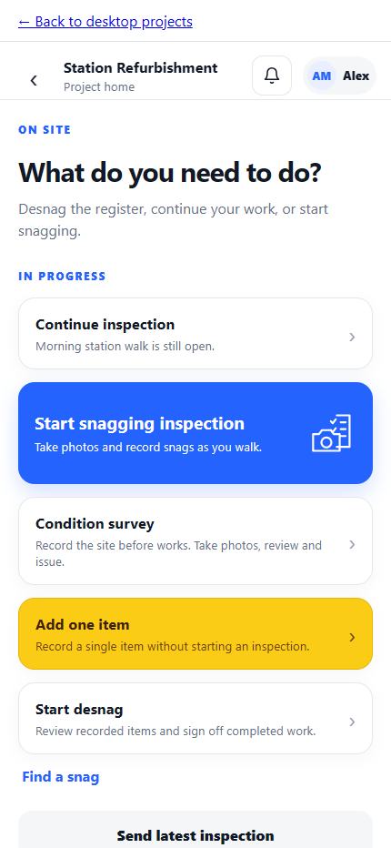
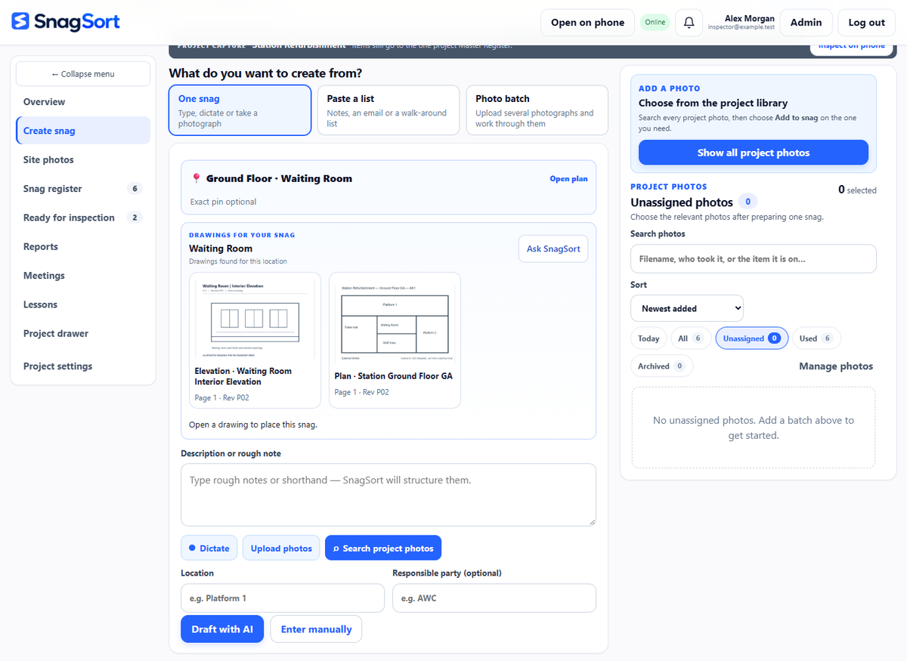
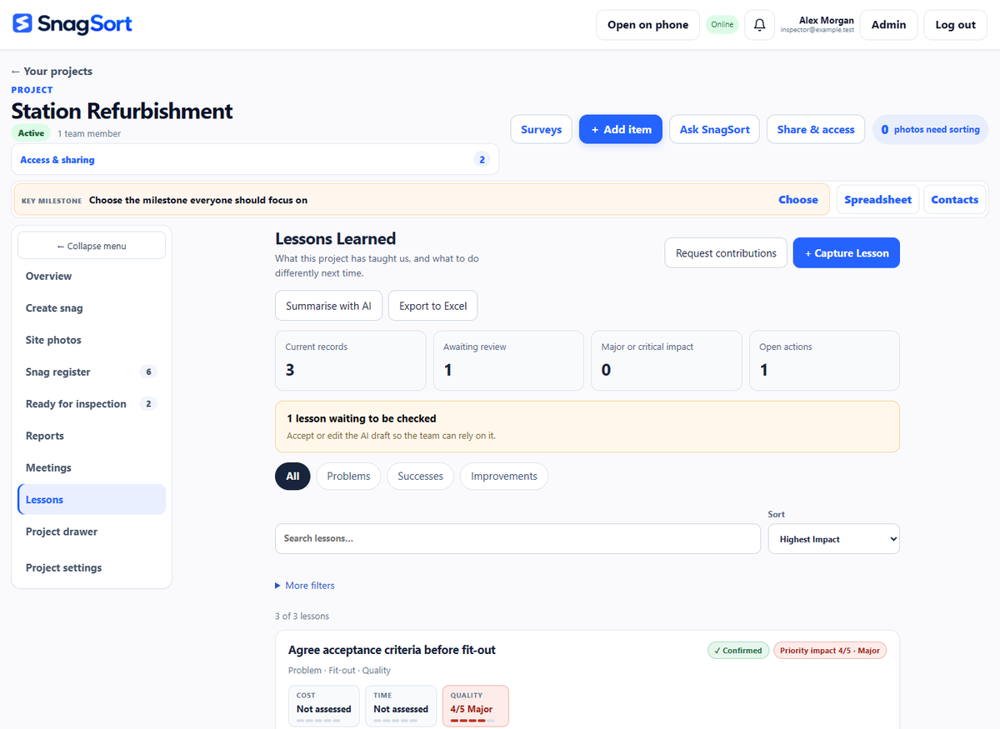
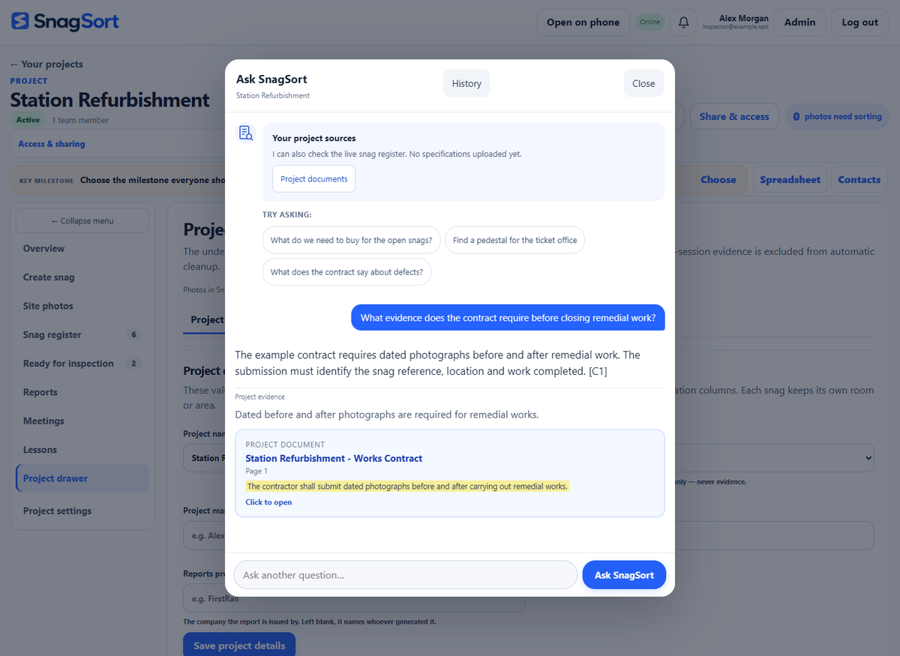
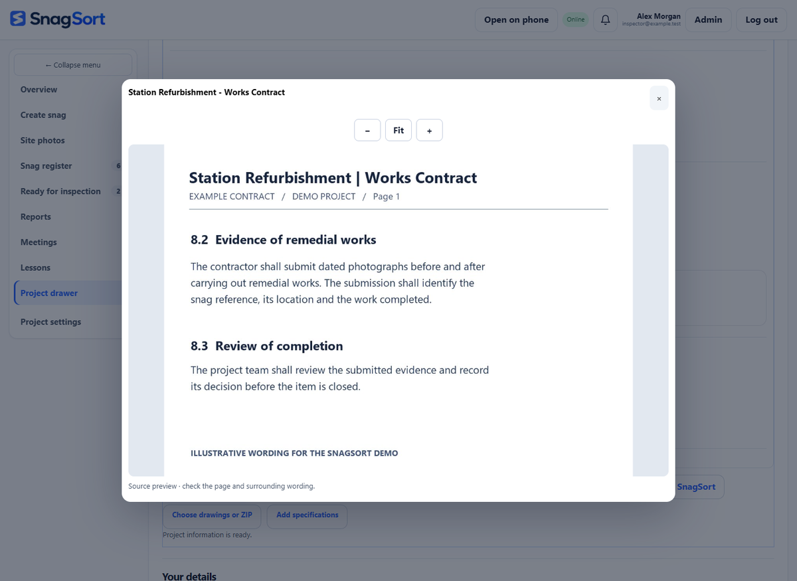

Solutions
Software built from delivery experience.
Selected technology capabilities from GMBF Ventures, led by SnagSort: construction defect management, with lessons learned and knowledge tools shown here in product demonstrations.
SnagSort
Construction defect management built from first-hand delivery experience and designed for construction project workflows.
- Defect capture on site, with photographs and drawing pins
- Evidence management against each item
- Contractor coordination and responses
- Verified closeout, with completion and acceptance kept separate
SnagSort has its own website at snagsort.com, with support and account help.

Capabilities
More than a snag list.
The same project record is designed to support knowledge work: lessons learned, document search and contract information, with people checking what software suggests. Screens below are from the product demonstration, with sample data.
Drawing-based capture
Pin defects to the drawing and draft descriptions from site photographs or notes. Suggested wording is treated as a draft for the inspector to check.

Lessons learned register
Capture lessons during the project, review and agree them, and track the action that follows. Built around the lessons learned loop, from capture to embedding.

Ask SnagSort: contract-aware answers
Designed to answer a question about project documents with a pointer to the source clause, so you can open it and check the wording yourself. Shown here as a product demonstration.


About this demonstration. The contract shown is illustrative and the AI response is simulated for this demonstration. On a live project, always check the original contract wording before relying on any answer.
Also from GMBF
Social Media Reminder (Live · in ongoing development) · ClearTill (Publicly available) · Set The Date (Publicly available) · GuestSetGo (Publicly available) · TalosTV (Pilot · Founding Families). Each has its own website, with support and account help.
Talk about a digital project.
Ask about SnagSort, or about applied AI and knowledge tools for your delivery team. Any software development or implementation is scoped separately.